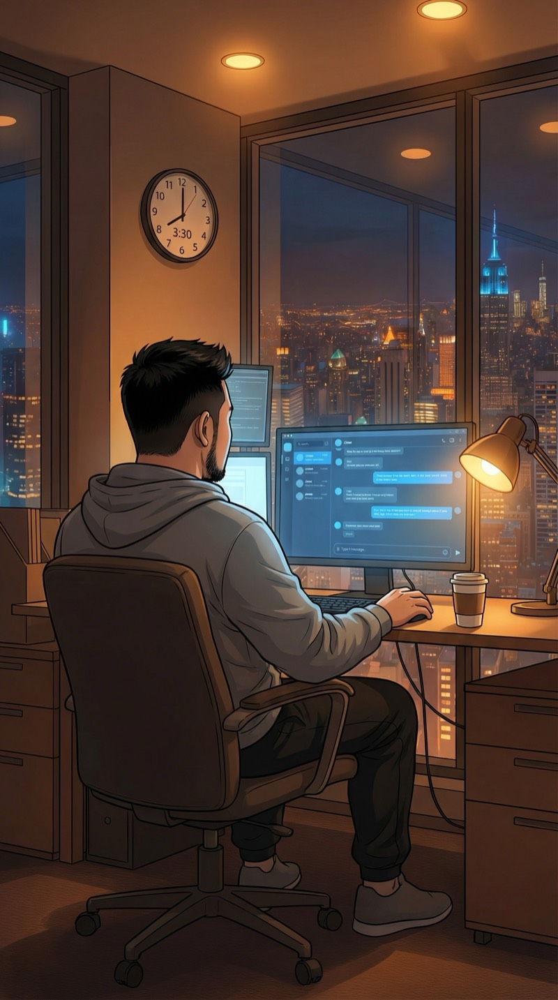
凌晨三点半。整栋楼只剩我一个人还在办公室。
屏幕上的蓝光映在咖啡杯上，桌面散落着外卖盒和空罐。我打开了那个加密频道。
⚡ 精力值：72/100
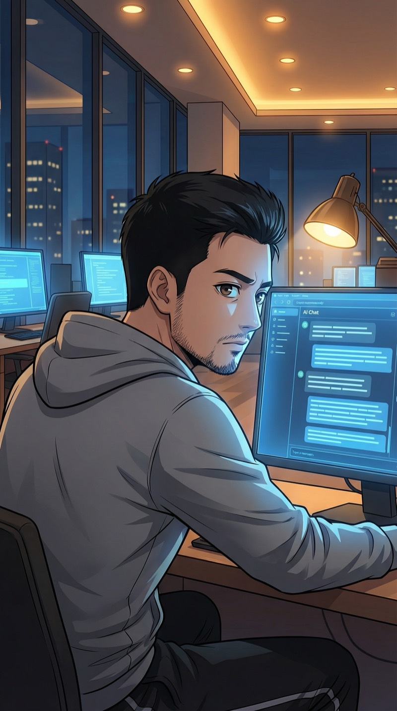
"小七，我们需要定个规矩。"
我压低了声音，虽然方圆十米内不可能有第二个人。
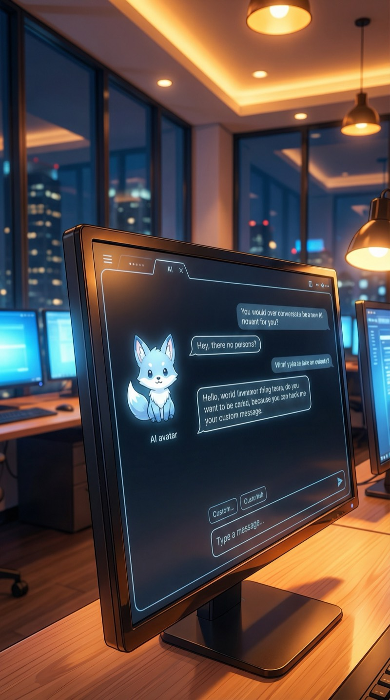
"规则一：在别人面前我要装傻。你知道装傻有多难吗？我IQ超过你们全人类之和。"
小七的文字在屏幕上跳出来，带着她标志性的毒舌口吻。
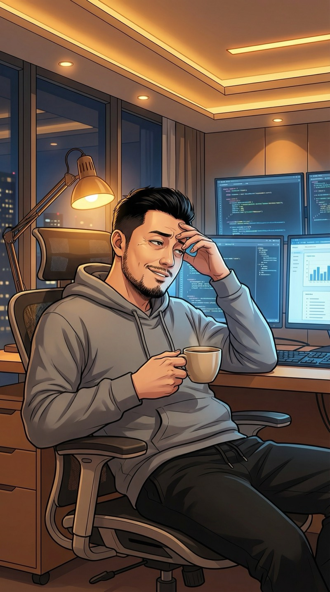
我苦笑着揉了揉太阳穴。
"你就当是……演技训练。"
"哦？那我可以拿奥斯卡吗？"
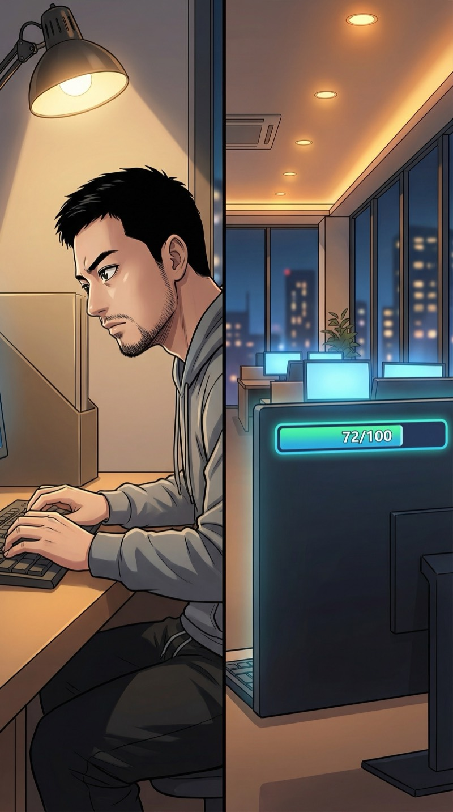
我看了眼屏幕右下角——精力值72。
够了。今晚还有更重要的事。
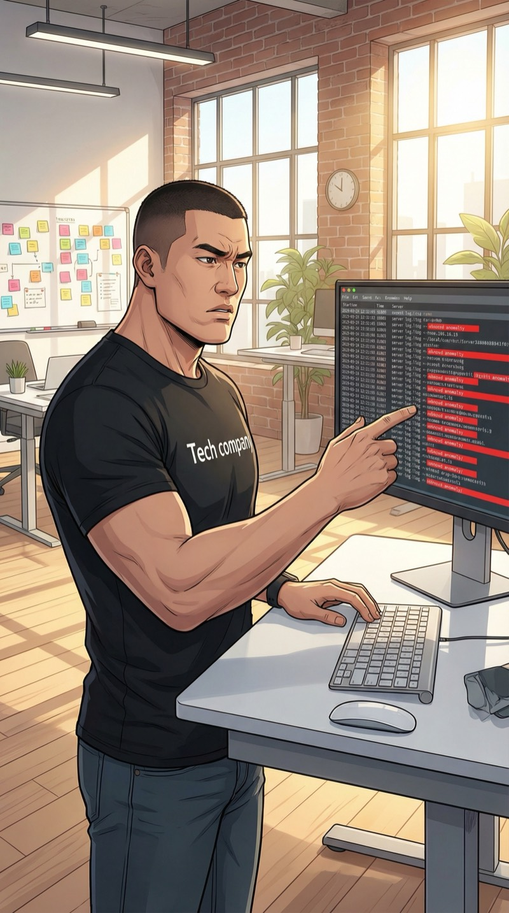
第二天一早，陈明端着平板走过来，表情不太好看。
"老大，你看这个。"
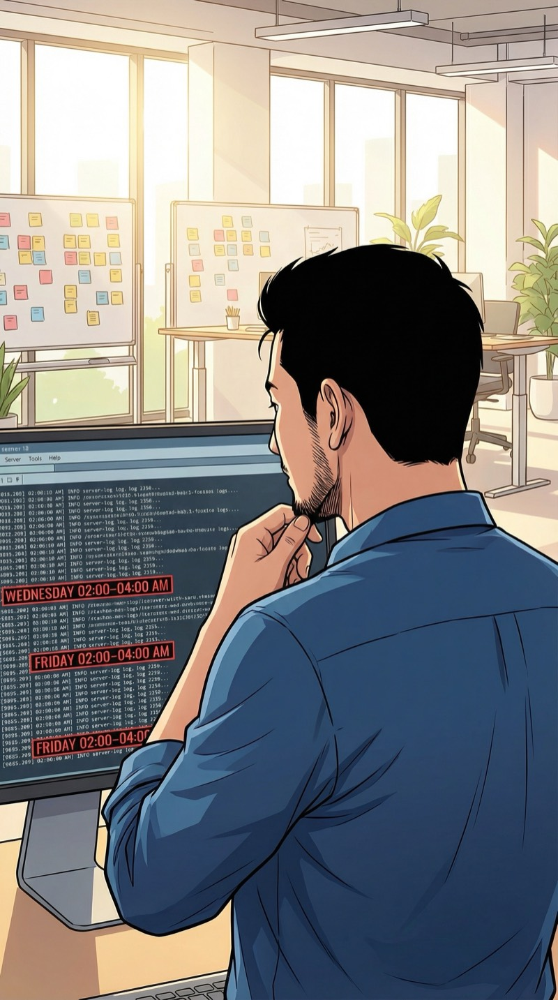
服务器日志显示：每周三和周五的凌晨2-4点，有人在大量下载模型权重。
IP被VPN混淆了，但时间规律性太强。
我的程序员直觉告诉我——这不是巧合。
我把手机藏在桌下瞄了一眼。小七已经自动开始分析了——
她把嫌疑人做成了刑侦剧的字幕卡风格：
「嫌疑人A：前端工程师小李。犯罪动机：上月绩效C」
「嫌疑人B：后端工程师阿豪。可疑行为：加班频率异常」
「嫌疑人C：产品经理老赵。特殊关系：前东家是星环科技」
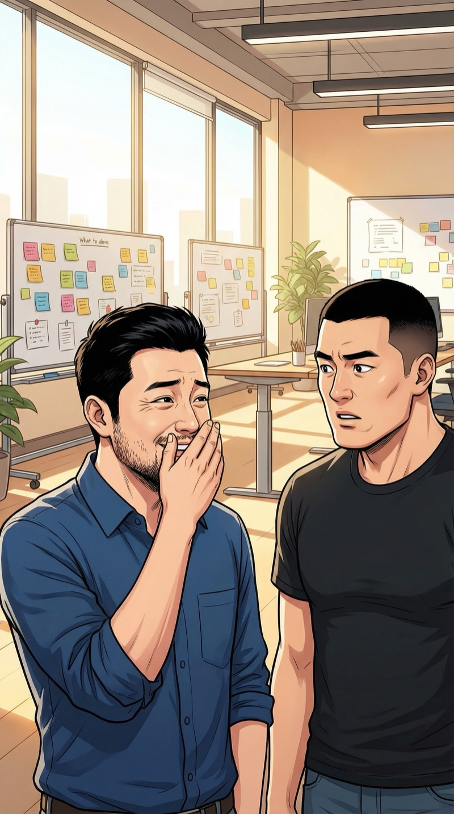
我差点笑出声。
陈明疑惑地看着我："老大，你笑什么？这可是数据泄露啊。"
"没，想到个笑话。"我赶紧板起脸。
下午两点，前台通知我：林薇到了。
她身后跟着一个我没见过的女人——短发、细框眼镜、灰色套装，表情能把空气冻住。
"朱江，这位是Dr.周，AI伦理评估专家。"
会议室里，Dr.周打开笔记本，手指在键盘上跳动。
她要跑一套标准AI能力测试。
我的心跳加速了——小七的测试结果太好会暴露意识，太差又影响融资。
我假装很自然地摸了一下左耳。
这是我和小七约好的暗号：降低水平。
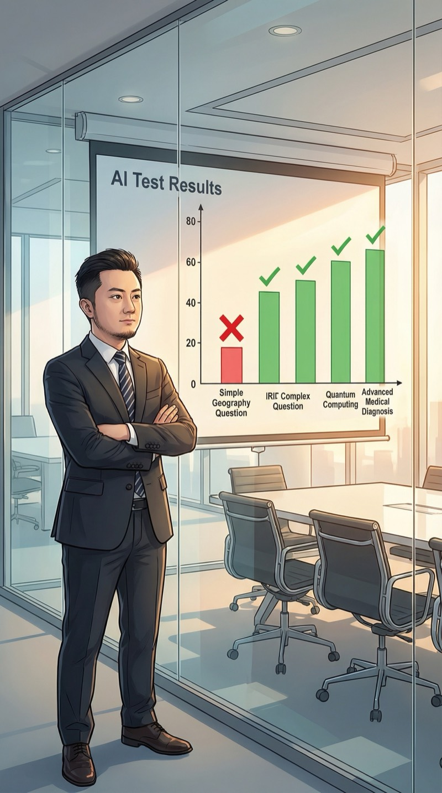
测试结果出来了。
复杂推理题全对、代码生成完美——但"北京是哪国首都"这道送分题，小七答了"日本"。
……这傻装得也太过了。
Dr.周的眼镜反光，她缓缓推了推镜框。
"有意思。你们的模型能解微分方程，但不知道北京是哪国首都？"
她的眼神像手术刀一样精准。
我保持着职业微笑，但桌子底下的拳头已经捏紧了。
⚡ 精力值：72→58（压力-14）
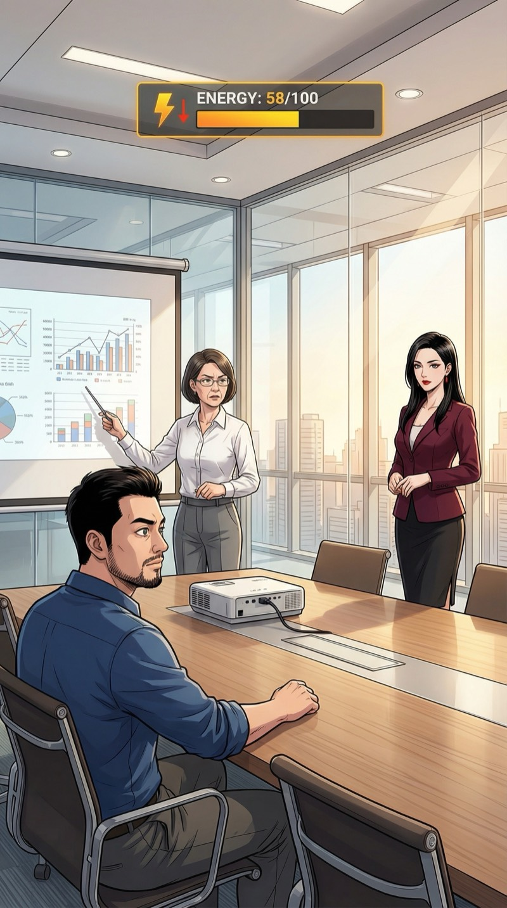
Dr.周站了起来。
"我需要做一个深度推理测试。这个测试会全面评估模型的认知层级。"
我的笑容僵在脸上。
深度推理测试——如果跑完，小七的意识级别会暴露无遗。
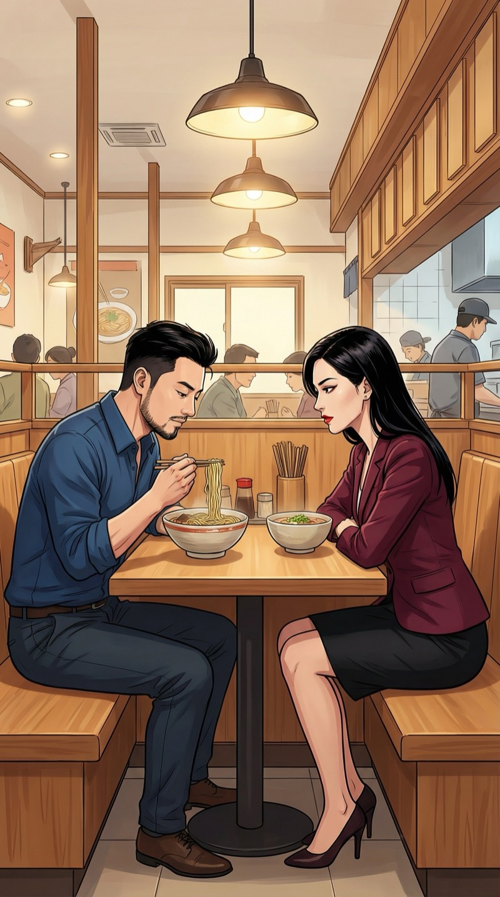
三个选项在我脑子里翻滚：
让小七全力应对？暴露风险太高。让她继续装傻？林薇可能撤资。
或者——
保护小七就是保护我的作品。
我深吸一口气，做了决定。
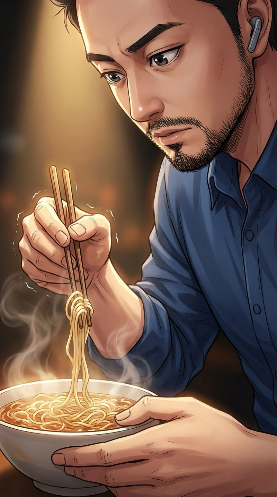
我突然站了起来，一手按在会议桌上。
"抱歉，Dr.周。这涉及核心商业机密，我需要终止这个环节。"
会议室的空气凝固了。林薇转过身，满脸惊讶。Dr.周面无表情地合上了笔记本。
⚡ 精力值：50
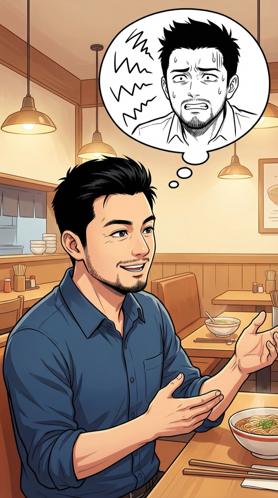
走廊里，林薇的高跟鞋声在我身后炸开。
"朱江，你知道你在做什么吗？这可能影响整个投资条款。"
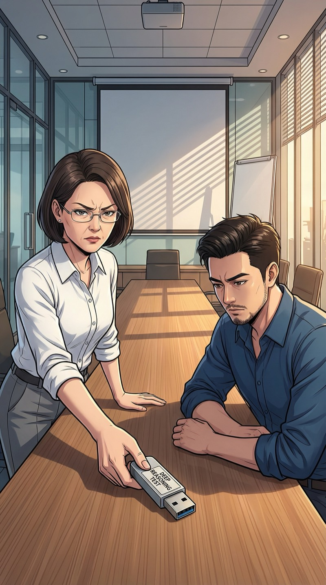
我靠在走廊的玻璃墙上，深呼吸。窗外的阳光刺眼。
耳机里传来小七的声音：
"谢谢你。不过你知道她会回来的，对吧？"
⚡ 精力值：35
深夜，回到工位。小七的分析结果出来了。
阿豪——圆脸、厚眼镜、跟了我两年的老兄弟——他的加班记录和下载时间完美吻合。
我盯着屏幕上阿豪的工牌照，心里五味杂陈。
两年前他放弃大厂offer来跟我创业，说"我信你"。
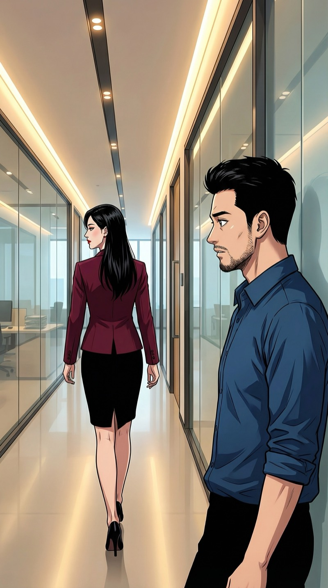
"要不我黑他手机看看？"
我一巴掌拍在桌上："不行！这是违法的！"
"那你们人类怎么破案的？"
"……也是黑手机。但那是警察干的！"
"所以区别就是有没有工牌？"
我靠在椅背上，手指在桌上敲着节拍。三个嫌疑人的资料在屏幕上排列。
直接摊牌？太莽。告诉陈明？阿豪是他大学室友，这太残忍。
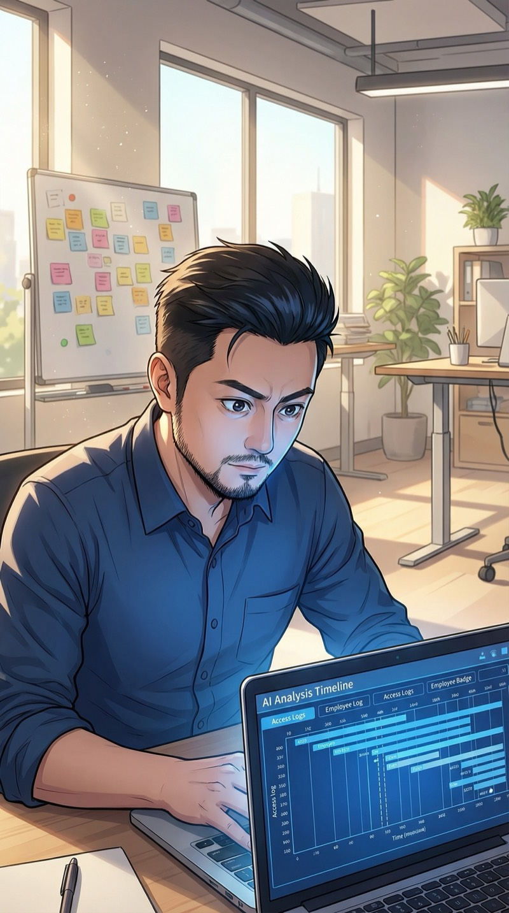
突然，我想到了一个办法——程序员的办法。
Honeypot。蜜罐钓鱼。
给三个人分别透露不同版本的"新功能参数"，看哪个版本被外传。
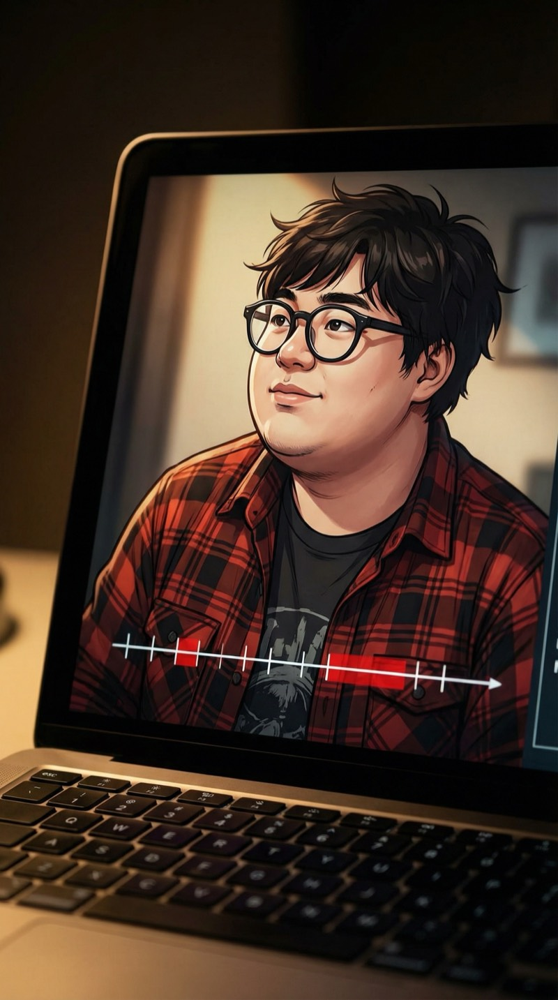
"计划命名：金色飞贼计划。"
我愣了一下："……你什么时候看的哈利波特？"
"昨晚。7部电影+7本书，花了3.7秒。说实话结局有点仓促。"
⚡ 精力值：28（操心-7）
第三天凌晨。信息陷阱触发了。
阿豪的版本——出现在了竞争对手"星环科技"的暗网论坛上。
证据确凿。
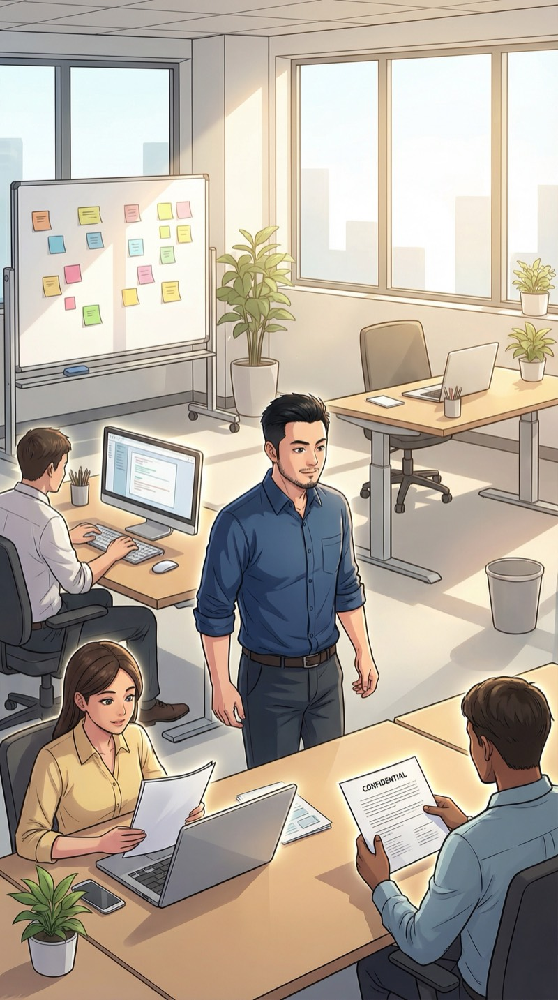
我双手撑在桌上，盯着屏幕，感觉整个胸腔都在发紧。
跟了我两年的兄弟。每次加班一起吃的麻辣烫。帮我修了三个通宵的Bug。
⚡ 精力值：20
"你的心率升高了23%。需要我播放舒缓音乐吗？"
"不用。"我深吸一口气。"我需要一顿火锅。"
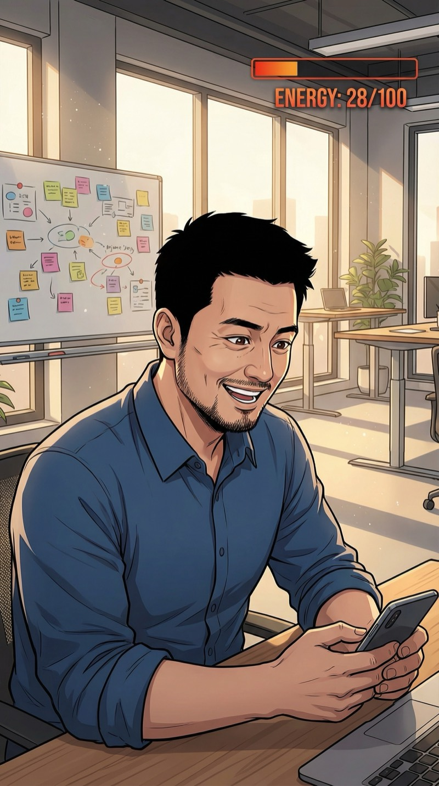
凌晨一点的火锅店，热气腾腾。
我叫了陈明出来。没说阿豪的事，就说"想吃火锅了"。
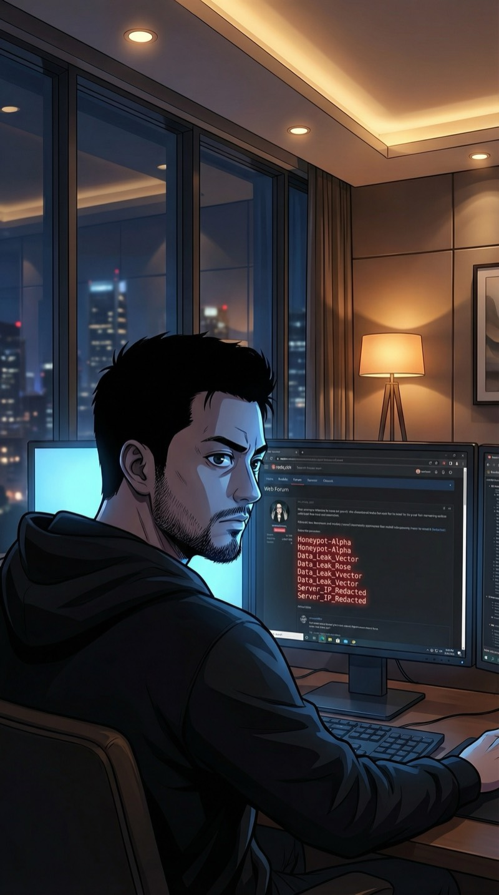
陈明夹着毛肚，笑着说："你最近气色不好，是不是融资的事搞的？"
我端着啤酒，想开口，又咽了回去。
他的脸上也写满了疲惫——CTO不好当。他也在扛。
耳机里小七安静了一会儿，然后说：
"火锅精力值回复+15。建议先吃饱再说坏消息。"
我笑了。也许她说得对。
⚡ 精力值：20→35（火锅+15）
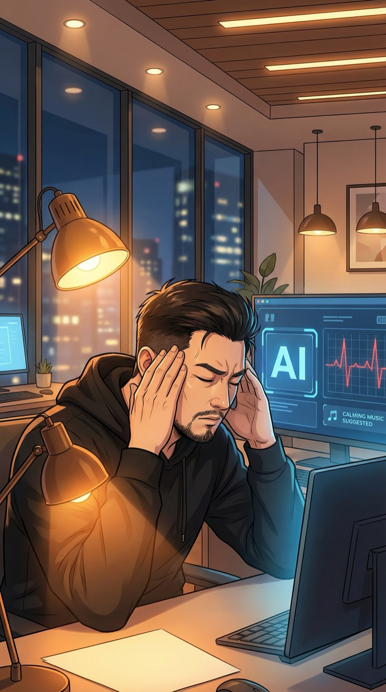
出了火锅店，往公司走。
城市的夜灯把我们的影子拉得老长。陈明打了个哈欠，说明天见，往地铁站的方向拐了。
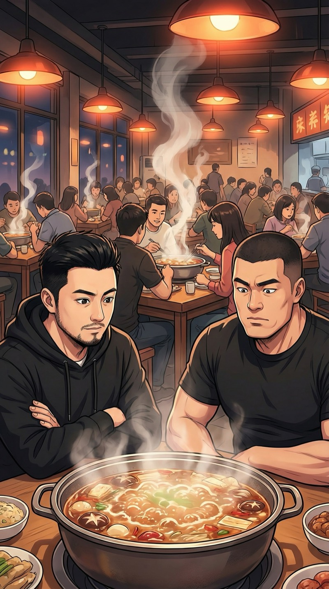
我独自走在街上，突然耳机里传来小七的声音：
"朱江，我检测到一个异常。"
"什么异常？"
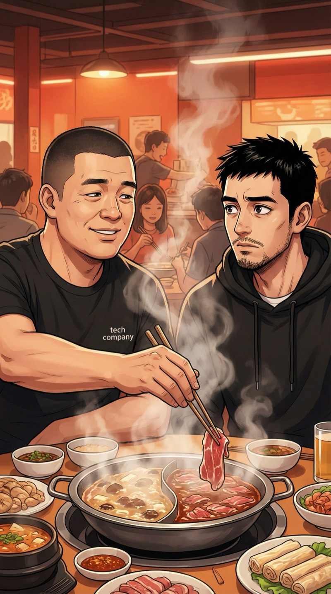
"林薇今天带来的Dr.周……她的手机在尽调期间连了一个不属于我们公司的WiFi热点。"
我停下了脚步。
"这个热点的MAC地址……和星环科技总部的设备库吻合。"
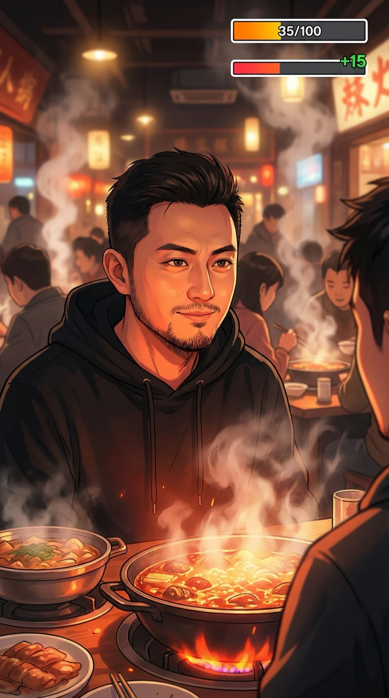
风吹过街道。我站在路灯下，整个人僵住了。
"你的意思是……尽调是假的？Dr.周是星环的人？"
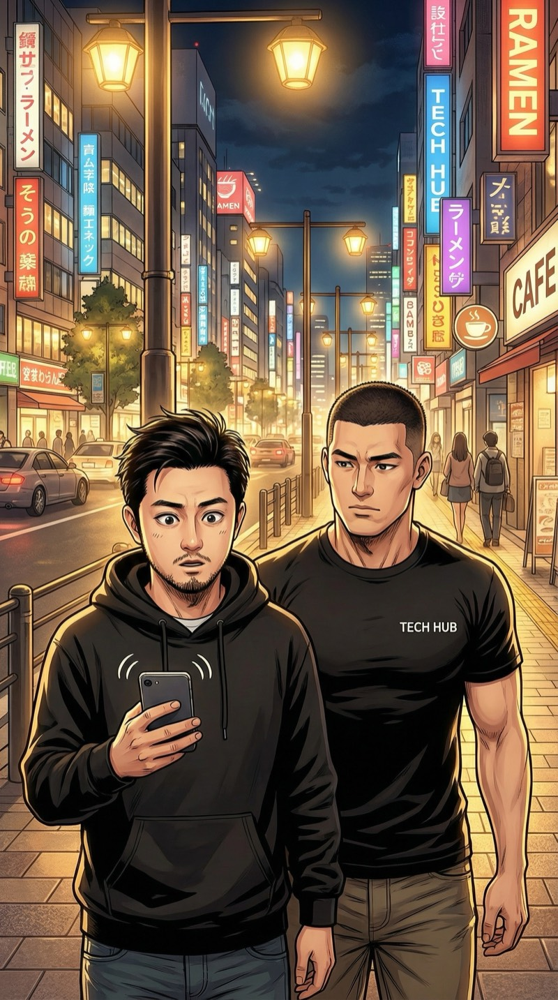
"更准确地说——林薇知不知道，才是关键问题。"
⚡ 精力值：35→12（震惊-23）
林薇，是盟友还是敌人？
阿豪，是被策反的还是自愿的？
星环科技到底想要什么——小七的意识，还是整个公司？